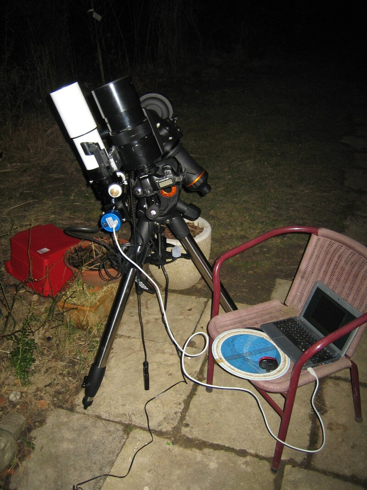
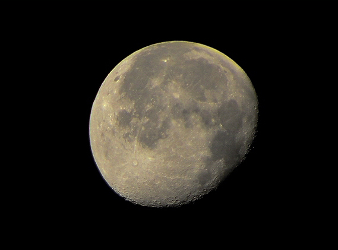

Астрофото
Я занимаюсь астрофотографией. В зависимости от объекта съёмки и её цели (замысла) в астрофотографии может применяться различное оптическое и съёмочное оборудование (как телескоп с фотоаппаратом, так и фотокамера с собственным объективом); оптические системы разных типов и с разным фокусным расстоянием. Могут использоваться короткофокусные для широкоугольных снимков, пейзажей с ночным небом, обширных областей неба. Для фотографирования небесных объектов, без телескопов и длиннофокусных объективов — не обойтись. Фотокамера может быть установлена неподвижно (для фотографирования следов звёзд, ярких небесных объектов и звёздных полей), так и на оснащённую часовым приводом монтировку, или телескоп на монтировке,  той или иной конструкции, обеспечивающий компенсацию суточного вращения Земли. Съёмка с использованием телескопа включает в себя целый ряд технических приёмов, способов и особенностей (как собственно съёмки, так и последующей обработки изображения). Некоторые производители выпускают для астрофотографии специализированные модели фотоаппаратов, например Canon EOS 20Da, Canon EOS 60Da, отличающимися матричным светофильтром с повышенным светопропусканием в области красных цветов, и дополнительными функциями.